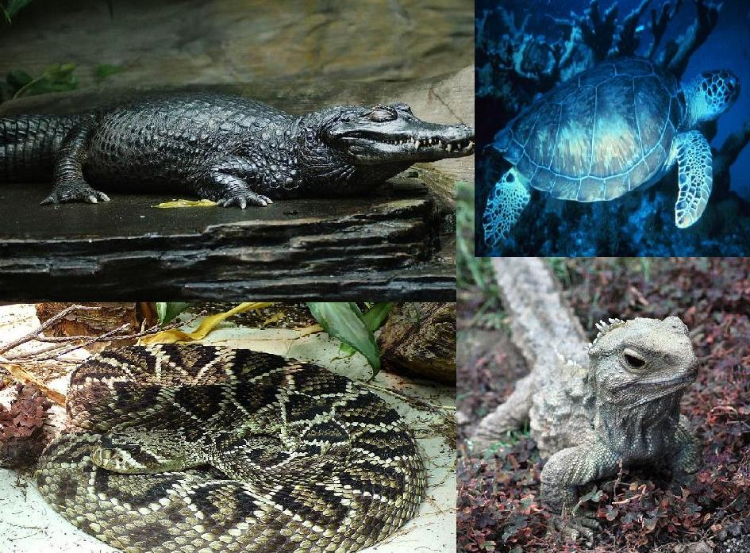

포유류
포유류의 가장 큰 특징은 젖샘이 있어서, 수유를 한다.
물론 다른 소수의 동물에게서도 젖샘과 비슷한 것은 있다.
알을 낳는 단공류를 제외한 모든 포유류는 태생이다.
이것을 기준으로 다시 나누어 태반이 없는, 유대류와, 태반이 있는 유태반류로 다시 나눈다.
포유류 외에도 새끼를 낳는 동물이 몇 있다.
열대어 구피, 바닷물고기 망상어, 망치상어가 대표적이다.
그렇지만 이들은 뱃속에서 알을 부화시켜 새끼를 낳는 난태생이므로, 태생을 하는 포유류와는 다르다.
극소수의 동물 중 실러캔스, 진디등이 태생을 하는데, 이것은 매우 드문 예외이다.
모든 포유류가 온혈동물이기는 하지만 조류나 다랑어류도 마찬가지이므로, 이것만으로는 포유류의 정의로 적합하지 않다.
보통은 털로 덮여있으나 유린목은 털이 비늘로 변화하였고,
단공목의 한 종류인 가시두더지와 고슴도치목의 고슴도치는, 털이 가시로 변해 있다.
모든 포유류 - 영장류, 특히 인간-는 두뇌의 의존도가 크고 신체에 비해 커다란 두뇌를 가지고 있다.
예를 들어 같은 크기의 파충류와 비교할 때 포유류의 두뇌는 파충류의 약 네 배에 달한다.
6500만년 전 소행성의 충돌로 공룡이 멸종한 뒤 포유류가 번성했을 때 초기 종들이 야행성이었던 탓에
시각만이 아니라 촉각, 후각, 청각 등의 감각으로 전해지는 정보를 처리하기 위해 더 큰 두뇌가 필요했다.
예를 들면 침팬지는 시각보다 청각적 정보를 통해 추론을 이끌어내는 데 더 능하다.
파충류
파충류(Reptilia, 爬蟲類)는 용궁류(Sauropsida) 파충강에 속하는 척추동물이다.
린네식 분류법으로 파충류로 분류 되는 동물들을 뜻하며, 공기로 호흡하고,
"냉혈(Cold-Blooded)" 물질대사를 하고, 딱딱한 껍질을 갖고 양막(羊膜,
amnion, a kind of membrane)을 지닌 알을 낳는다.
{태생을 할 경우에도 비슷한 막(membrane)이라는 시스템을 유지한다.}.
피부는 비늘과 껍질로 이루어져있다. 네개의 다리를 지니거나 네발을 지닌 선조에서
유래한 네발동물(영어: Tetrapod)이며, 배(胚, embryo)가 양막이란 막(membrae)에 의해
둘러쌓인 구조인 양막형 알(amniotic eggs)을 낳는다. 현재의 파충류들은 남극을 제외한
모든 대륙에 분포하며, 네 개의 목(order)으로 분류된다. 최근에는 조강과 함께 용궁류의
분기군(Clade)으로 들어간다. 그러나 일반적인 의미의 파충류는 조강을 제외하고, 거북목을 포함한다.
악어목 (Crocodilia) - 23 종
옛도마뱀목 (Sphenodontia) - 2 종.
뱀목 (Squamata) - 뱀과 도마뱀을 포함. 약 7,600 종
거북목 (Testudines) - 약 300 종
파충류는 양서류와 달리 물속에서 살아가는 유생 단계(예, 개구리의 올챙이, 도롱뇽의 올챙이 시기)를 거치지 않는다.
일반적으로 파충류는 알을 낳으며(oviparous (egg-laying)) 비늘을 가진 몇몇 종은 새끼를 낳는다.
새끼를 낳는 경우는 난태생 (ovoviviparity ,알이 만들어지지만 어미 몸 속에서 오래 머물면서 알을 깨고
나올 때 어미 몸 밖으로 배출됨)과 태생(viviparity, 석회질의 껍질을 만들지 않고 새끼를 출산함) 둘 중 하나이다.
태생(viviparous)을 하는 파충류들은 포유류의 태반과 닮은 다양한 형태의 태반을 이용하여 태아에게 영양분을 제공하며,
난태생하는 종의 경우에는 초기에 많은 영양분을 알 속에 넣어주고 알이 깨어날 때까지 돌봐준다.
현존하는 파충류들은 성체의 크기가 1.7 cm(0.6 in)인 작은 도마뱀붙이(게코 도마뱀, Sphaerodactylus ariasae)에서부터
길이가 6m, 몸무게가 1,000kg에 달하는 바다악어(Crocodylus porosus)까지 다양한 크기로 존재한다.
파충류를 연구하는 과학을 양서파충류학(両棲爬虫類学, Herpetology)이라 한다.

조류
계통적으로는 석형강 공룡상목 조강(鳥綱)에 속한다. 새는 포유류와 마찬가지로 심장이 2심방 2심실이며,
허파로 호흡하는 항온동물이다. 날짐승이라고도 한다.
분류에 따라 8,800 ~ 10,200 종이 분포한다. 가장 작은 종은 벌새이며, 가장 큰 종은 타조이다.
보통 공룡의 멸종기인 6천600만년전 이후 조류가 생겨났다고 인식되는 경우가 많으나,
1877년에 독일 졸로호펜에서 발굴된 시조새와 중국에서 발견된 안키오르니스의 화석을 통해 수각류
공룡이 약 1억 5,000만 년 전부터 조류의 형태로 진화되고 있었던 것으로 확인되었고, 현재까지 살아남은
유일한 수각류에 속한다. 각질의 깍지로 덮여 있는 부리와 비늘이 있는 다리, 날개 이외의 뼈대 구조 등은
파충류와 비슷하나 체표가 깃털에 싸여 있는 점과, 앞다리가 날개로 변화해 있는 점은 현생하는 다른 동물
무리에서는 볼 수 없는 특징이다.